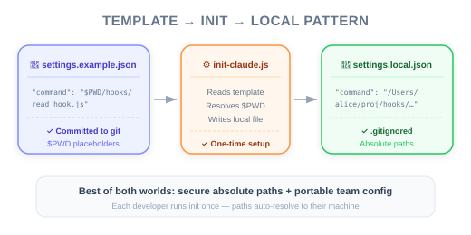

Figure: The security vs. portability tradeoff — absolute paths are secure but machine-specific; template + init script solves both.
| Item | Detail |
|---|---|
| Exam Domain | D3 — Claude Code Configuration & Workflows (20%) |
| Task Statements | 3.2 (custom commands & hooks), 1.5 (Agent SDK hooks for tool call interception) |
| Source | claude-code-in-action / 05-hooks / Lesson 17 (text-only) |
Hook scripts should use absolute paths for security (preventing path interception and binary planting attacks), but absolute paths break portability across machines — solve this with a settings.example.json + init script pattern that replaces $PWD placeholders with machine-specific absolute paths.
You know how to define and implement hooks (Lessons 15-16). This lesson addresses a real-world deployment problem: the tension between security best practices (absolute paths) and team collaboration (sharing settings files).
💡 iOS/Swift analogy
This is like the tension between hardcoding a certificate pinning hash (secure but breaks when the cert rotates) vs. loading it from a config (flexible but requires a secure distribution mechanism). You need both security AND portability — the solution is an automated setup step.
Claude Code's security recommendations state that hook commands should use absolute paths:
// ❌ Relative path (security risk)
"command": "node ./hooks/read_hook.js"
// ✅ Absolute path (secure)
"command": "node /Users/alice/projects/queries/hooks/read_hook.js"
Absolute paths mitigate two attack vectors:
| Attack | Description | How Absolute Paths Help |
|---|---|---|
| Path interception (MITRE T1574.007) | Attacker places a malicious node or script in a directory that appears earlier in $PATH |
Absolute path bypasses $PATH resolution entirely |
| Binary planting (OWASP) | Attacker places a malicious file with the same name in the working directory | Absolute path points to the exact file, not a relative lookup |
⚠️ Security is non-negotiable
The CCA exam treats security best practices as the correct answer. If a question asks about hook command paths, absolute paths are always preferred.
The problem is simple: absolute paths are machine-specific.
Alice's machine: /Users/alice/projects/queries/hooks/read_hook.js
Bob's machine: /home/bob/dev/queries/hooks/read_hook.js
CI server: /workspace/queries/hooks/read_hook.js
If you commit settings.json with Alice's absolute path, it breaks on Bob's machine and in CI.
Figure: The security vs. portability tradeoff — absolute paths are secure but machine-specific; template + init script solves both.
The course project solves this with a three-file pattern:

settings.example.json (committed to git){
"hooks": {
"PreToolUse": [
{
"matcher": "Read|Grep",
"hooks": [
{
"type": "command",
"command": "node $PWD/hooks/read_hook.js"
}
]
}
]
}
}
The $PWD placeholder marks where the absolute path should go.
scripts/init-claude.js (committed to git)This script:
1. Reads settings.example.json
2. Replaces all $PWD placeholders with the actual working directory
3. Writes the result to settings.local.json
settings.local.json (gitignored, generated)The output file with machine-specific absolute paths. This file is never committed — it is regenerated per machine.
Developer clones repo
↓
Runs `npm run setup` (or `npm run dev`)
↓
init-claude.js executes
↓
$PWD → /Users/alice/projects/queries
↓
settings.local.json generated with absolute paths
↓
Claude Code uses settings.local.json with secure, machine-specific paths
📝 Why this matters for teams
This pattern ensures:
- Security: Every developer uses absolute paths
- Portability: The template works on any machine
- Automation: No manual path editing required
- Version control: The template is tracked; the generated file is not
After running npm run dev, you will see two .json files in the .claude directory:
| File | Purpose | In Git? |
|---|---|---|
settings.json |
Team-shared settings (no hooks with paths, or shared non-path configs) | Yes |
settings.local.json |
Generated file with machine-specific absolute paths for hooks | No (gitignored) |
This is why the lesson title mentions "gotchas" — seeing two settings files can be confusing if you do not understand the template-generation pattern.
| ❌ Wrong Approach | ✅ Correct Approach | Why |
|---|---|---|
| Use relative paths in hook commands | Use absolute paths | Relative paths are vulnerable to path interception and binary planting |
Commit settings.local.json with absolute paths |
Commit settings.example.json with $PWD placeholders |
Absolute paths are machine-specific — they break on other machines |
| Manually edit paths for each developer | Use an init script to auto-generate | Manual editing is error-prone and not scalable |
| Skip the security recommendation | Always use absolute paths | CCA exam expects security best practices |
Put hook paths in settings.json (shared) |
Put hook paths in settings.local.json (generated) |
Shared settings should not contain machine-specific paths |
The CCA exam may combine hook security with settings hierarchy questions:
| Settings File | Scope | In Git? | Hook Paths? |
|---|---|---|---|
~/.claude/settings.json |
Global (all projects) | No | Absolute (machine-specific) |
.claude/settings.json |
Project (team-shared) | Yes | Avoid paths; use for non-path configs |
.claude/settings.local.json |
Project (personal) | No | Absolute (generated from template) |
Key exam principles:
- Security: Absolute paths prevent path interception attacks
- Portability: Template + init script pattern solves the sharing problem
- Hierarchy: More local settings take higher priority (same as git config)
Your team wants to share a PreToolUse hook configuration across all developers. The hook script is located in the project's hooks/ directory. What is the recommended approach?
settings.local.json with relative paths to the hook scriptssettings.json with absolute paths to the hook scriptssettings.example.json with $PWD placeholders and an init script that generates settings.local.json with absolute pathssettings.local.json with their absolute pathsYour CI pipeline uses Claude Code with hooks. The pipeline runs on different CI runners with different file system layouts. The hook configuration uses relative paths (node ./hooks/check.js). A security audit flags this as a vulnerability. What is the correct fix?
$PATHsettings.local.json with absolute paths based on the runner's workspace directorysettings.json with a hardcoded path that matches all CI runnersA new developer joins your team and clones the project. They start Claude Code and notice that hooks are not working. They see a settings.example.json but no settings.local.json. What is the most likely cause and fix?
npm run setup) to generate settings.local.json from the templatesettings.example.json to settings.json manually